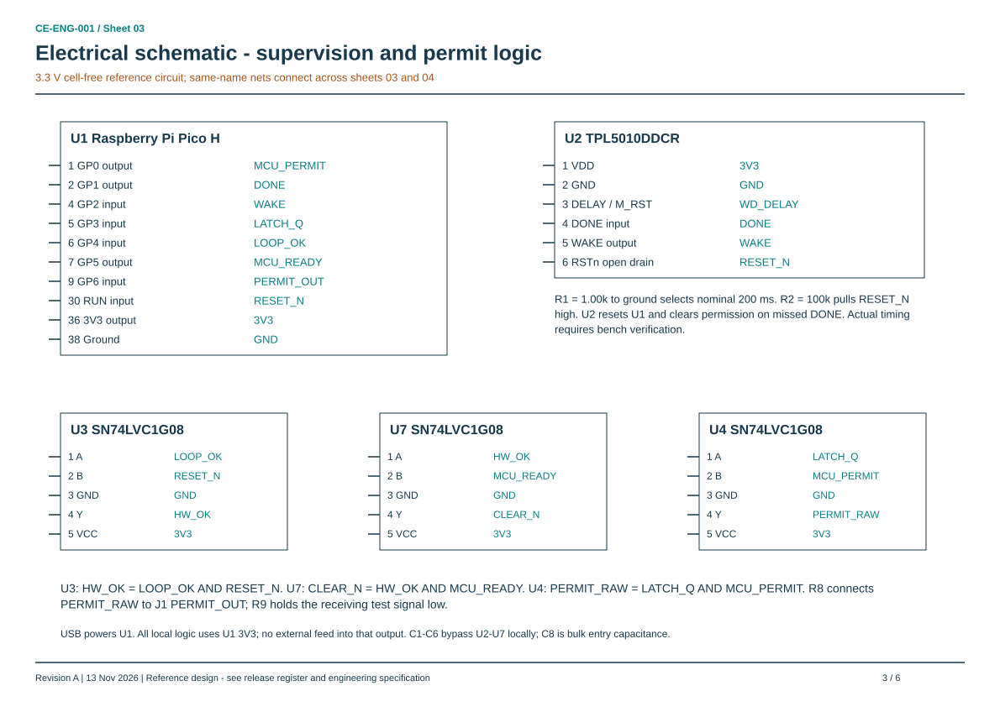
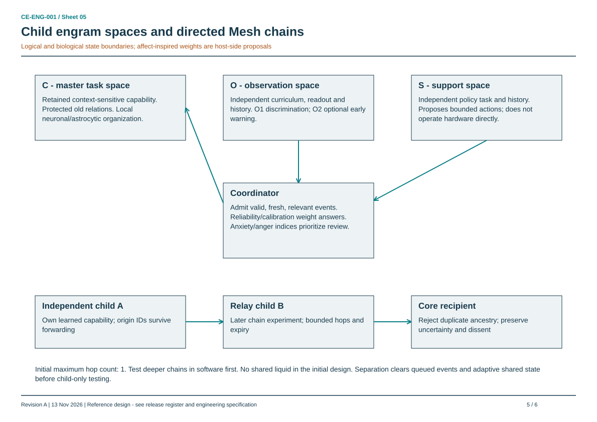
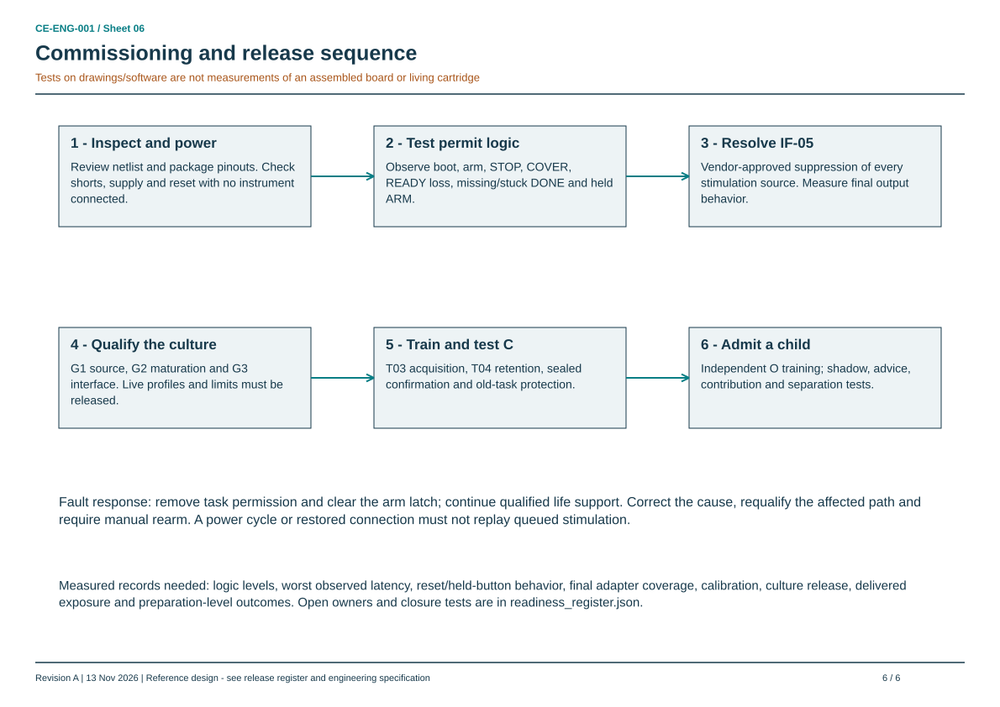

Engineering drawings
System schematics
Six reference sheets covering the system, circuitry and joining interfaces. Open a sheet for full size; vendor integration and manufacturing remain gated.








Six reference sheets covering the system, circuitry and joining interfaces. Open a sheet for full size; vendor integration and manufacturing remain gated.


